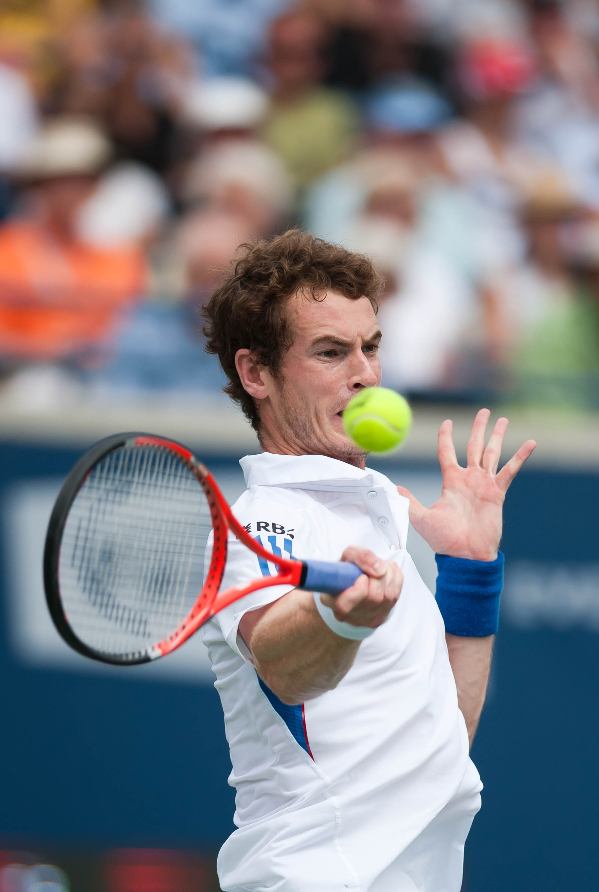
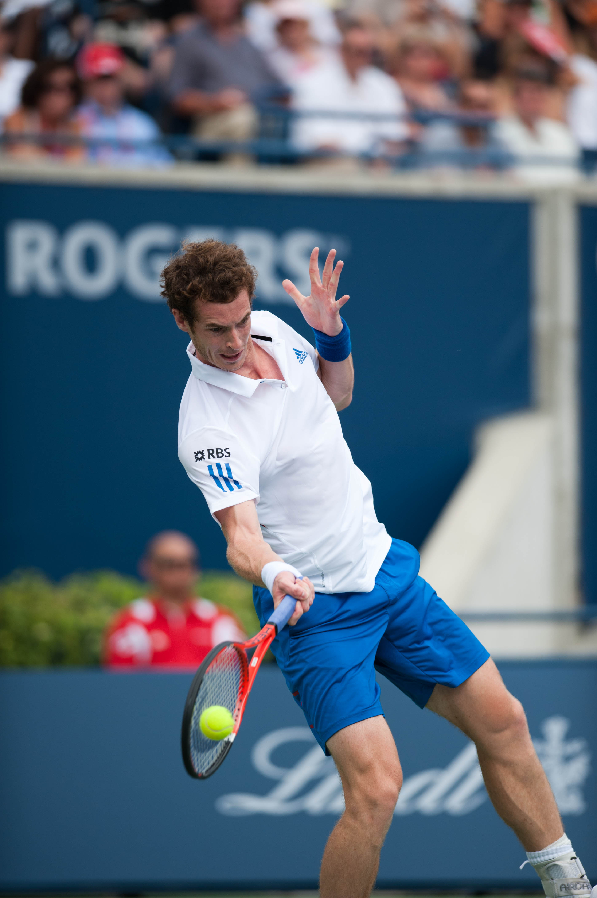
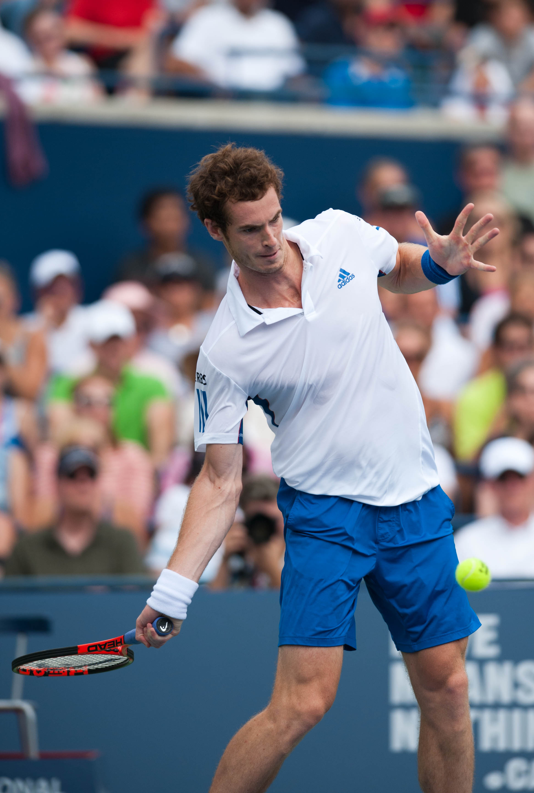
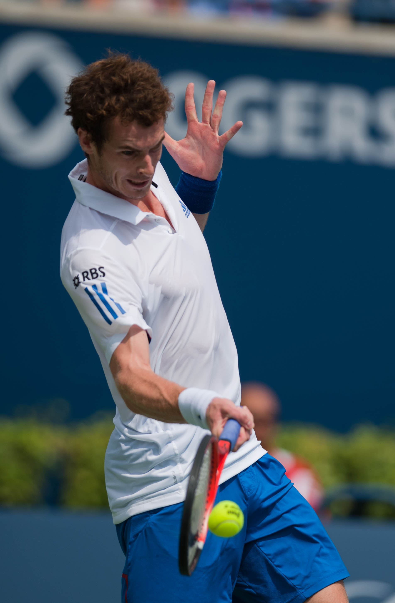
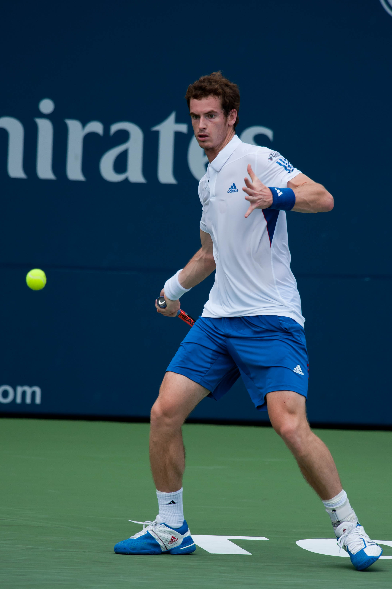
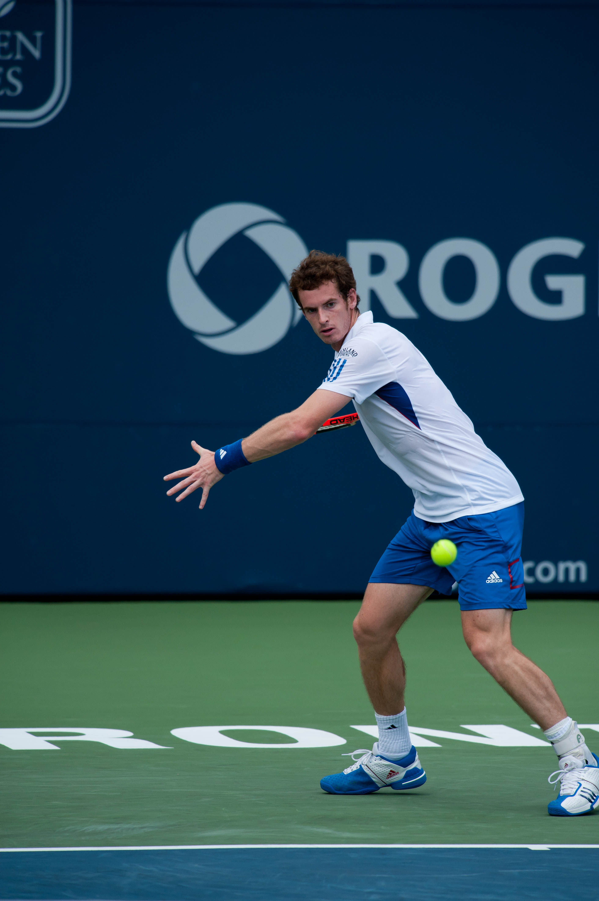

Step 1 — Turn
As the ball leaves the other racket, turn your shoulders and take the racket back. Side-on to the net. Do not wait facing the net square.
Basics 2 of 6
A real stroke sequence. Watch the racket go back, drop, meet the ball in front, then finish high.

As the ball leaves the other racket, turn your shoulders and take the racket back. Side-on to the net. Do not wait facing the net square.
Bend the knees. Weight on the back foot. The hitting arm is still relaxed. Eyes on the ball, not on the opponent.

Let the racket head drop below the ball (the “slot”). This is how you swing low to high instead of slapping.

Step toward the ball with the front foot. Contact happens in front of your hip, not beside your back pocket.
Meet the ball out in front. Strings face the target. A short, clean hit beats a wild swipe.

Keep the racket moving toward the other court after contact. Do not stop at the ball.

Follow through over the opposite shoulder. The swing ends up, not across your knees.

Get back to the middle of your half, racket up, ready. One good forehand is useless if you admire it.